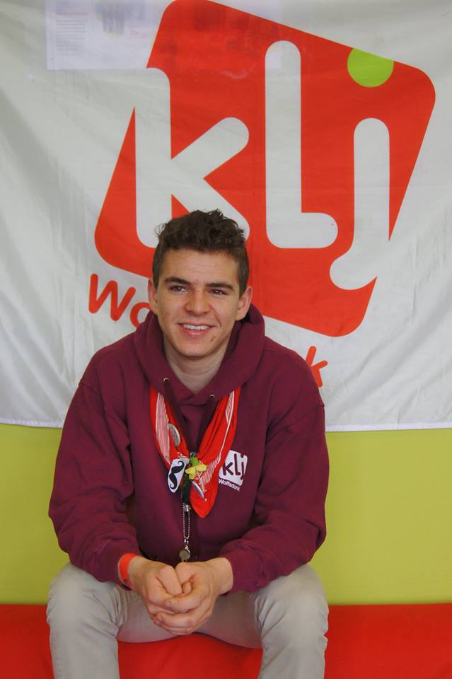
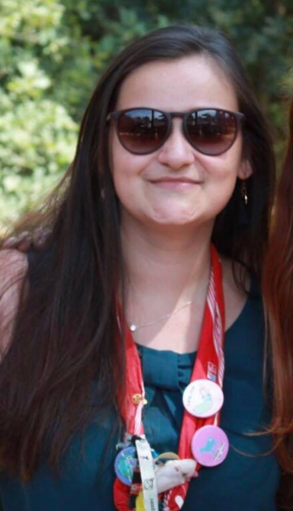

Vliegende leiding
Joren
Joren Kempenaers
Oude Mechelsebaan 483a
3201 Langdorp
Geboortedatum: 15 juli 1996
Studies: Mechanische technieken, Damiaaninstituut Aarschot
Werk: Treinbestuurder Infrabel
Functies in de Klj:
Vuilnis verantwoordelijke
Julie
Julie Printemps
Vennestraat 109
3201 Langdorp
Geboortedatum: 29 oktober 1997
Afgestudeerd als: verpleegkundige Studies: professionele bachelor in de vroedkunde
Functies in de KLJ:
EHBO
Ledencommunicatie